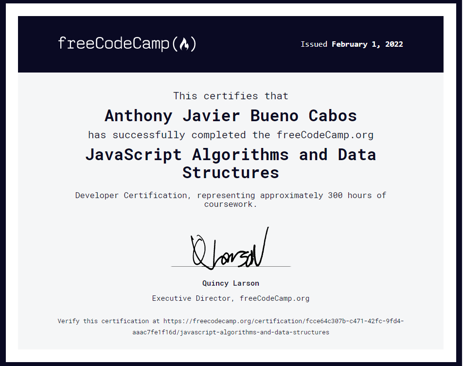

Educación
- Antonio Guillermo Urrelo (Secundaria)
- Ingeniería de Sistemas - Universidad Nacional de Cajamarca (9no
Ciclo)
Certificaciones

- Scrum Foundation Professional Certificate SFPC™ (CertiProf)
- JavaScript Algorithms and Data Structures (FreeCodeCamp)
- Desarrollo Web Completo HTML5, CSS3, JS AJAX
PHP Y MySQL (Udemy)
- Cloud Computing (Google)
Lugares Visitados
- Lima
- Trujillo
- Cajamarca
- Chiclayo
Hobies
- Jugar Fútbol
- Escuchar Música
- Bailar Danzas
- Salir a Correr
Comidas Favoritas
- Cuy Frito
- Ceviche
- Lomo Saltado
- Caldo de Gallina